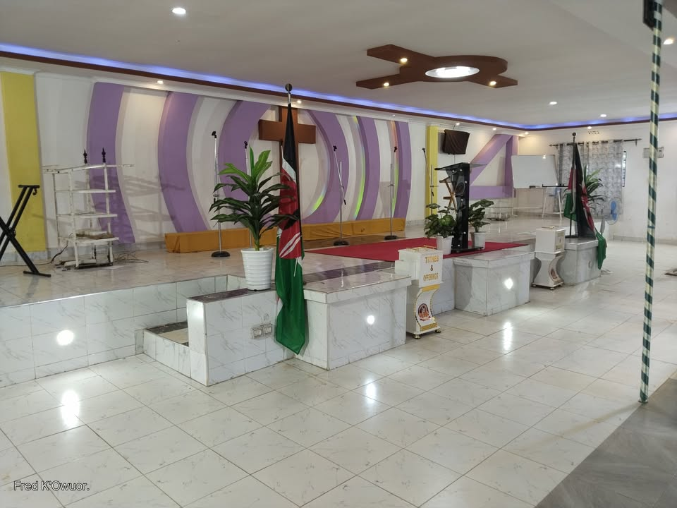
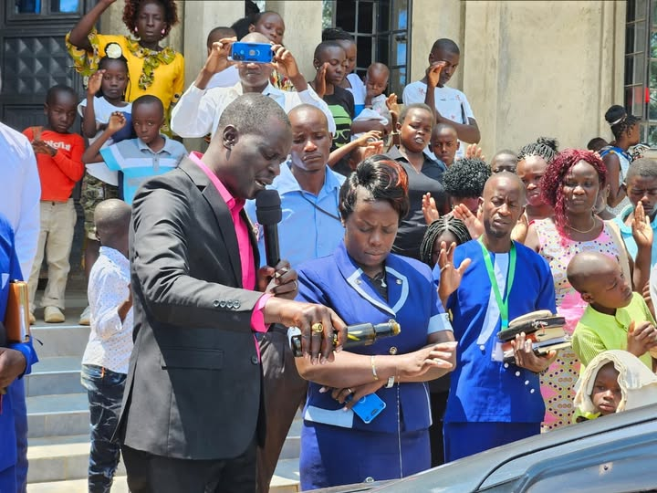

Worship
Make space for prayer, music, Scripture, and a message of hope each Sunday.
Join us Sunday
Call of God Revival Ministry International is a church in Ugunja, committed to the Word of God, evangelism, and serving our community through missions.
Plan your visit Explore what’s happeningYou’re welcome here. Join us for worship, the Word of God, and fellowship.
Sunday services: 8:30 AM & 10:00 AM
We are a Christian ministry in Ugunja, Siaya County, committed to sharing the Word of God and the hope of the Gospel.
Led by Bishop Fred K’owuor, our ministry reaches beyond the church through evangelism and community missions.
Get to know usFaith comes alive when we gather, care for one another, and serve our wider community.
Make space for prayer, music, Scripture, and a message of hope each Sunday.
Join us SundayFind friendship and encouragement in a small group, family ministry, or weekly gathering.
Explore ministriesShare your gifts and help bring practical care and compassion to our neighbors.
Find your placeJoin us to hear the Word of God and take part in the life and mission of the church.
Join the church family for worship and teaching from the Word of God.

Sharing the Gospel and serving the community through missions. Contact us to learn more.
Bishop Fred K’owuor
Clergy · Lead Pastor
Sunday services at 8:30 AM and 10:00 AM.
Ugunja-Ukwala Road, Ugunja, Siaya County, Kenya · Postal Code 40606
Contact the ministry